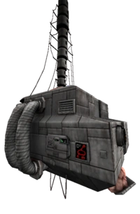

The 1000-THR "Earthmover" is a formidable boss in ULTRAKILL, requiring careful strategy and precision. The fight involves multiple phases, each presenting unique challenges. This guide offers tips and tactics to help you overcome this mechanical giant.
The fight begins with the Earthmover's Defence System, designed to protect its core. Here's a breakdown of the system's components and how to dismantle them:
The Defence System consists of:
The laser cannon remains active until other components are destroyed, increasing its lethality over time.
To disable the system, target its components in an efficient order. Focus on these key parts:
The rocket launchers deal continuous damage. Use precise weapons like the Sharpshooter Revolver or explosives to quickly disable them.
The mortars fire slower but deadlier projectiles. Parry them to send damage back to the system or use long-range weapons to destroy them while staying mobile.
The homing pylons track your movement and can be overwhelming if ignored. Use rapid-fire or rail weapons to take them out as soon as possible.
Once the other components are destroyed, the laser cannon becomes vulnerable. Dodge its tracking beam and use high-damage precision weapons to destroy it.
After dismantling the Defence System, the fight transitions to the Earthmover's brain, protected by rotating laser walls and additional hazards. This phase is all about timing and precision.
The laser walls rotate around the arena, leaving small gaps for you to dodge through. Practice timing your jumps and slides to avoid taking damage.
The brain periodically fires large homing orbs. These can be evaded using the arena's structures for cover or with quick lateral movement.
The brain is occasionally protected by Idols, which spawn in destructible containers. Destroy these Idols to remove the shield while using the containers for cover against other hazards.
